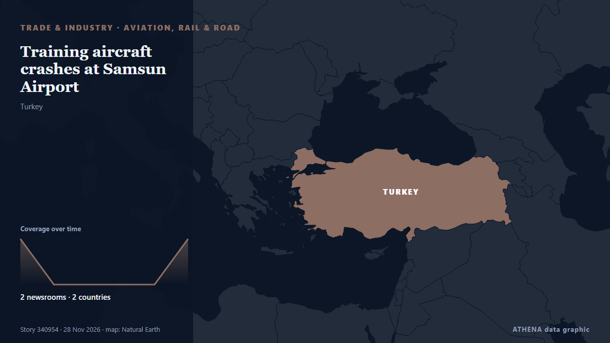

Aviation, rail & road
SponsoredPresented by  Cybernetics and Artificial Intelligence Lab Welcome to the Cybernetics and Artificial Intelligence Laboratory, established at the Department of Business Administration of the National and Kapodistrian University of Athens. The lab is headed by Professor Dimitrios Thomakos. The lab aims to do research that can be published in top venues. Our research uses tools and methods of Artificial Intelligence, and lies in the following areas: - Forecasting - Decision making - Cyber security - Finance We are always looking forward to collaborating with exceptional students!
Cybernetics and Artificial Intelligence Lab Welcome to the Cybernetics and Artificial Intelligence Laboratory, established at the Department of Business Administration of the National and Kapodistrian University of Athens. The lab is headed by Professor Dimitrios Thomakos. The lab aims to do research that can be published in top venues. Our research uses tools and methods of Artificial Intelligence, and lies in the following areas: - Forecasting - Decision making - Cyber security - Finance We are always looking forward to collaborating with exceptional students!
| 15 Nov | 0 |
|---|---|
| 16 Nov | 0 |
| 17 Nov | 0 |
| 18 Nov | 0 |
| 19 Nov | 0 |
| 20 Nov | 1 |
| 21 Nov | 0 |
| 22 Nov | 1 |
| 23 Nov | 2 |
| 24 Nov | 2 |
| 25 Nov | 5 |
| 26 Nov | 5 |
| 27 Nov | 5 |
| 28 Nov | 3 |

Training aircraft crashes at Samsun Airport
Reported by 2 outlets in 2 countries since 28 Nov. First reported by APA (English). ATHENA rates the risk 0.0/10 (none detected), with 52% confidence.
Ukraine reportedly launches massive attack on Moscow Oblast with 460 drones
The reported Ukrainian attack prompted flight restrictions at several airports, including Vnukovo and Domodedovo in Moscow Oblast. from Kyiv Independent
Norse Atlantic Airways: Another European airline goes bankrupt amid Iran war, rising fuel costs: All you need to know
Norse Atlantic’s Norwegian operating subsidiary filed for bankruptcy after failing to secure funds and withstand mounting financial pressure, including rising aviation fuel costs. from Livemint
Hundreds of thousands still without power a day after US slammed with Thanksgiving storms
More than 260,000 people remain without power after severe weather hit both coasts of the United States during the Thanksgiving holiday. from MyJoyOnline
Dubai airport expansion contracts hit $21.8bn as UAE aviation sector accelerates growth
Dubai airport expansion contracts reach $21.8bn as UAE airports invest in passenger capacity and Emirates, Etihad and flydubai expand global networks and fleets. from Arabian Business
PLA Army to display Z-20T, other advanced weaponry at Zhuhai airshow
The Army of the Chinese People's Liberation Army (PLA) will stage flight demonstrations with three types of helicopters, the Z-10, Z-20 and Z-20T, at the 16th China International Aviation and… from CGTN (China)
IM8 Is David Beckham’s Answer to Late Nights, Long Flights, and Early Call Times
The soccer star co-founded IM8 with health sciences company Prenetics, and the brand's most complete product now carries his name: the Beckham Stack. from Rolling Stone
Thanksgiving storm on U.S. East Coast knocks out power, disrupts flights
A powerful storm disrupted the Thanksgiving holiday along much of the U.S. from CBC News (alternative feed)
Hyderabad family gets Rs 70,000 after airline cancels direct Thailand flights
A family from Hyderabad faced flight cancellations by an airline while traveling to Thailand. from Times of India
Chabahar–Zahedan railway 96% completed
The CEO of the Construction and Development of Transportation Infrastructures Company announced the completion of rail-laying on the 480-kilometer Chabahar–Zahedan railway route and 96% physical… from Tehran Times
Qantas plane aborted Sydney landing to avoid collision with New Zealand carrier
An investigation has been launched after Qantas pilots were forced to delay their landing while two aircraft cleared the runway. from Sydney Morning Herald
Déjà vu in Miami as FedEx MD-11 freighter overshoots runway
Call it runway redux at Miami airport on Saturday when a FedEx cargo jet ran off the runway into a grassy field. from FreightWaves
Thanksgiving has a bumpy history
The history of the American Thanksgiving holiday has evolved from early colonial feasts and Revolutionary War era proclamations to modern debates over its religious nature and official date. from The Hill
Belgium: Farmers and tractors descend on Brussels to defend EU subsidies
Around 200 representatives of European farming unions marched through Brussels, Belgium, on Thursday 26 November 2026 to protest against proposed cuts to the European Union's Common Agricultural… from Euronews English
Flydubai to resume Dubai–Tel Aviv flights from December 3 after two-month suspension
Flydubai will resume flights between Dubai and Tel Aviv on December 3 following a two-month suspension and approvals from the relevant authorities. from Arabian Business
In Lebanon, the opening of a second airport reflects political shifts
Kleiat Airport, located on the Mediterranean coast, about 20km from the border crossing to Syria, will offer another gateway to Lebanon. from The Straits Times
Unionized rail workers to launch work-to-rule campaign Thursday
SEOUL, Nov. 25 (Yonhap) -- Unionized workers of Korea Railroad Corp. from Yonhap (English)
CJP’s Saurav Das moves Delhi HC after being stopped from travelling to UK
The Ministry of External Affairs said the passport office had asked Das to respond to a notice over alleged discrepancies and not use the document until then. from Scroll.in
Sri Lanka allows Indians to travel without ETA approval temporarily | What travellers should know
Sri Lanka has temporarily waived prior ETA approval for Indian travellers while its ETA system undergoes maintenance. from Livemint